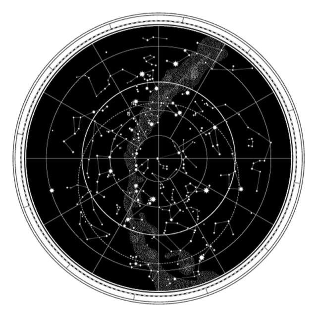
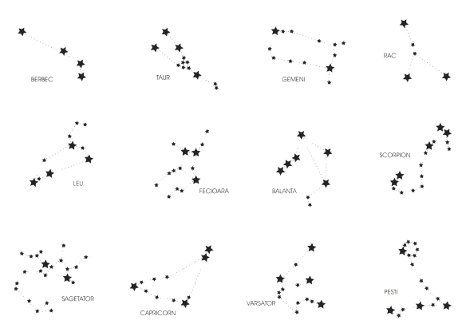

Astrograma natală, horoscopul nativ sau harta natală (Natal Chart în engleză)
este o reprezentare grafică a cerului într-un moment exact, de exemplu când cineva se naște.
Astrologia natală, prin intermediul Astrogramei, determină poziția în care se afla fiecare
constelație în momentul nașterii noastre. Aceasta ne poate ajuta să realizăm o introspecție
extrem de profundă, să ne dăm seama de ce ne-am născut cu anumite calități sau neajunsuri,
și cum să determinăm care este menirea noastră, și sensul venirii noastre pe acest Pământ.
Aceasta este pseudoștiința
care se ocupă cu studiul acestor diagrame personalizate, iar conform acesteia pozițiile relative ale
obiectelor cerești pot oferi informații despre personalitatea, relațiile umane și alte probleme
legate de viața umană. A nu se confunda totuși cu astronomia, știința soră, care studiază
aceleași elemente. Cele două au împartășit același titlu pentru o perioadă, datând încă
din al II-lea mileniu Î.Hr. Multe culturi și religii au acordat importanță evenimentelor astronomice
ca semne ale comunicărilor divine.
Care este zodia ta? este o întrebare inevitabilă din viața noastră pe
baza a cărui răspuns o ascutăm pe Neti la TV, citim sfaturi și preziceri pentru ziua noastră dintr-o
revistă
dimineața la cafea sau inițiem discuții cu prietenii născuți în aceiași lună. Acest horoscop
la care poate am mai făcut referire până acum derivă de la o entitate complexă cu o strucură
logică pe care o vei descoperi și înțelege mai bine mai departe.
Ce spune zodia mea despre mine?
Data nașterii
| foc | pământ | apă | aer | |
|---|---|---|---|---|
| cardinal | berbec | capricorn | rac | balanță |
| fix | leu | taur | scorpion | vărsător |
| mutabil | săgetător | fecioară | pești | gemeni |
Înțelegem astfel că trăsăturile fiecărei zodii pleacă de la aceasta combinație unică a celor două calități. În continuare pentru înțelegerea eficientă a unei astrograme este foarte important să avem o perpespectivă asupra tuturor celor 12 zodii, deoarece odată cu introducerea planetelor, vom descoperii că nu doar una este suficientă pentru a ne descrie. Deoarece discuțiile sunt infinite despre comportamentul exact al unei constelații, și pentru că scopul nostru este de a ne interpreta din propria viziune astrograma, iată cum îți poți aminti mereu ce definește fiecare zodie în ordine:
Berbecul
, cea mai tânără zodie
Berbecii au cel mai tânăr suflet și cea mai mare dorință de a experimenta totul. Ei trăiesc ca și cum ar face totul pentru prima dată, chiar dacă au mai trecut prin experiențe asemănătoare. De fiecare dată este nou totul pentru ei și de aceea se întâmplă adesea să se împiedice, să greșească și să piardă. Dar nu-i nimic! O iau de la capăt, pentru că viața este o experiență continuă.
Taurul
copilărește multă vreme
Sufletele nativilor Tauri sunt suflete de copii, deschise și sincere, pregătite pentru joacă și pentru lucrurile minunate pe care le văd. Taurii copilăresc multă vreme înainte de a se resemna cu vârsta lor. Învață mai greu ce este al lor și ce este al altora și nu poate fi luat. Le place să adune, să acumuleze, să aibă… le place confortul material și se înconjoară cu mulți prieteni ca viața să fie cât mai colorată și veselă.
Gemenii
, niște adolescenți rebeli
Din punct de vedere spiritual, Gemenii ar putea fi considerați niște adolescenți, undeva între 14 și 21 de ani. Doar că adolescența lor se extinde de-a lungul anilor până pe la 40 sau chiar 50 de ani. Sunt plini de energie, sfidează regulile, vor să acapareze atenția ca niște copii și vor să facă toate lucrurile pe care alții le refuză. Întotdeauna trebuie să fie ceva nou și aventuros în viața lor.
Racul
dă înapoi să fie mereu tânăr
Tineri adulți, emotivi și sensibili, ascunși, dar și generoși, Racii au suflete foarte tinere, care se exprimă cu dificultate. Ei încearcă să își construiască un zid de apărare înăuntrul căruia să se simtă în siguranță și, în același timp, ar vrea să fie în centrul atenției și iubiți de toată lumea. Au suficient curaj să se desprindă de rădăcinile părinților, pentru a zbura mai departe, dar își dau seama că trebuie să se ancoreze pe rădăcinile proprii cât de curând.
Leul
, un suflet deschis și tranșant
Spirite tinere, dar mature, Leii lasă jos masca și îți arată cine sunt cu adevărat. Au încheiat jocurile din copilărie, au trecut peste experiențele înșelătoare ale adolescenței și vor ca viața să le ofere totul pe drept. Îți place sau nu, trebuie să îi iei așa cum sunt și să fii deschis în preajma lor. Sufletul lor tânăr este curajos și nu se teme de eșecuri, pentru că știe că viața are mereu evenimente neprevăzute.
Fecioara
, un suflet matur și bine ancorat în realitate
S-ar putea spune că Fecioarele pot fi încadrate la grupa de vârstă 35 – 42 de ani. Este vârsta la care sufletul își cunoaște bine limitele, calitățile și nevoile. Nativii Fecioare știu ce vor de la viață, sunt responsabili, sunt organizați, se ocupă de orice problemă fără să se plângă pentru că au suficientă maturitate de a nu aștepta ajutorul nimănui. Fac bine diferența dintre ceea ce vor și ceea ce pot, fără să se plângă.
Balanța
, un echilibru între vârste
Spiritul Balanței ar putea fi comparat cu un adult matur, ușor grizonat, care acceptă viața așa cum este! Nativii Balanței au personalități complexe și complet dezvoltate, dar au nevoie de un partener pe măsură să le rotunjească viața, să se simtă împliniți sufletește. Ei pot avea totul singuri, dar dacă nu împărtășesc bucuria cu cineva, sufletul lor se ofilește. Viața lor este echilibrată cu adevărat când au parte de dragoste.
Scorpionul
, în pragul senectuții
Spiritul Scorpionului este prins în criza vârstei mijlocii, undeva între 50 și 56 de ani, când știi că se apropie bătrânețea, dar te simți încă tânăr și simți că mai ai multe de făcut. Ar face orice să o ia de la capăt și caută șanse noi acolo unde nimeni nu s-ar mai gândi să încerce. Scorpionii au nevoie de multă energie și o vor acapara de oriunde, dintr-o iubire nouă, din provocările de zi cu zi, din ambițiile pe care și le împlinesc.
Săgetătorul
, vârsta la care poți renunța la conformism
Dacă ești născută în zodia Săgetător, vârsta reală a zodiei tale este vârsta alegerilor. Săgetătorilor nu le place să respecte normele și obligațiile sociale. Sufletul lor a adunat multe, a gustat din fiecare și este la vârsta la care poate face alte alegeri. Când poți lăsa responsabilitățile în urmă, pentru că deja ți-ai învățat lecția, poți să trăiești liber și să crezi că viața mai are și alte lucruri de oferit. Când te desprinzi de cotidian, ai senzația că ești mult mai puternic și mai împlinit.
Capricornul
, la vârsta senectuții
Metaforic vorbind, Capricornii se nasc undeva între 63 și 70 de ani, cu un suflet încărcat de experiențe și trăiri, în care totul a fost cântărit, analizat și vindecat. De aceea, nativii Capricorni par atât de maturi și serioși și capabili să îi sprijine pe ceilalți. Ei au maturitatea și înțelepciunea necesară să își construiască o bază solidă în viață, chiar dacă nu dispun de prea multe resurse. Sunt ca niște alpiniști pe un munte aprig, care se bucură de priveliște, dar știu că drumul este greu.
Vărsătorul
, un spirit pragmatic
Sufletul Vărsătorului știe că, spre sfârșitul vieții, trebuie să aștepți. Când ai trăit din plin, când viața te-a încercat cu de toate, așteptarea trebuie să fie armonie și echilibru. De aceea, spiritul Vărsătorilor este înclinat spre reverie, dar niciodată spre acțiune. Cu toate acestea, Vărsătorii știu bine până unde pot merge, sunt pragmatici și îmbină înțelepciunea cu experiența acumulată.
Peștii
, cei mai bătrâni și totuși fără vârstă
Este ultima zodie, dar nu cea din urmă. Și este cea mai bătrână și, totuși, nu are vârstă. Din punct de vedere spiritual, Peștii se află în pragul evoluției supreme, când sufletul se scutură de toate poverile și se simte liber să treacă spre o nouă existență. De altfel, zodiile sunt dispuse în cerc pe roata zodiacului, arătând că ultima poate fi oricând cea dintâi și poate relua ciclul morții și al renașterii cu forțe noi.
